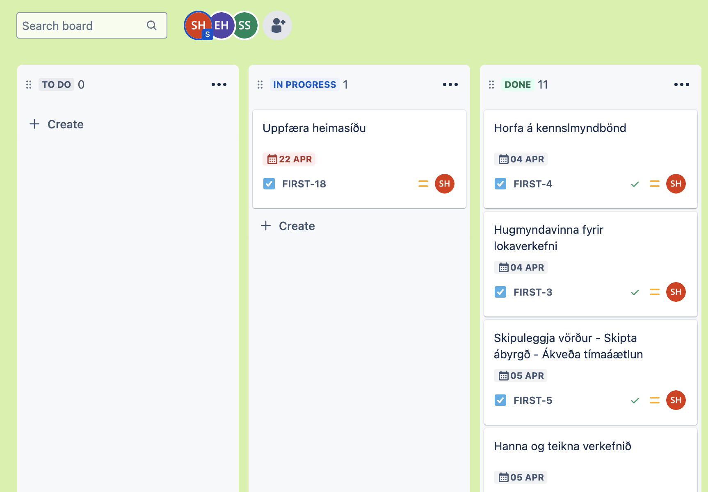
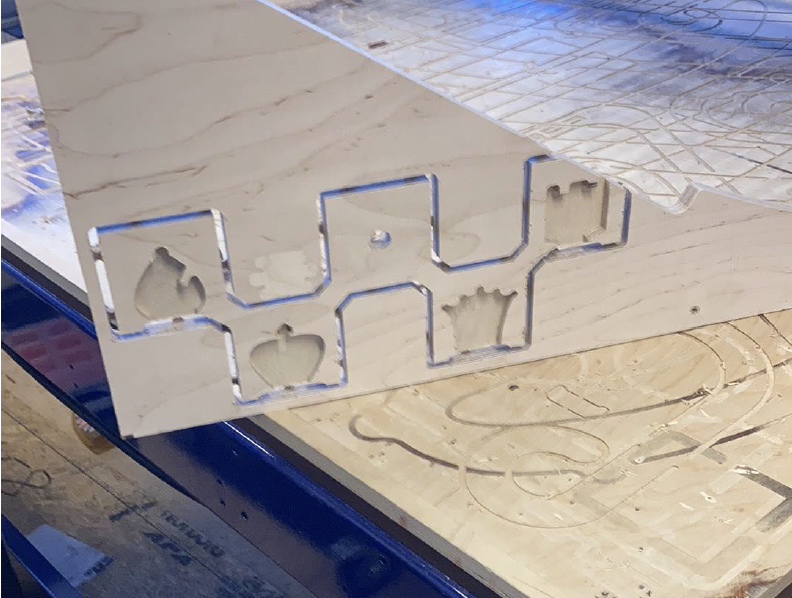
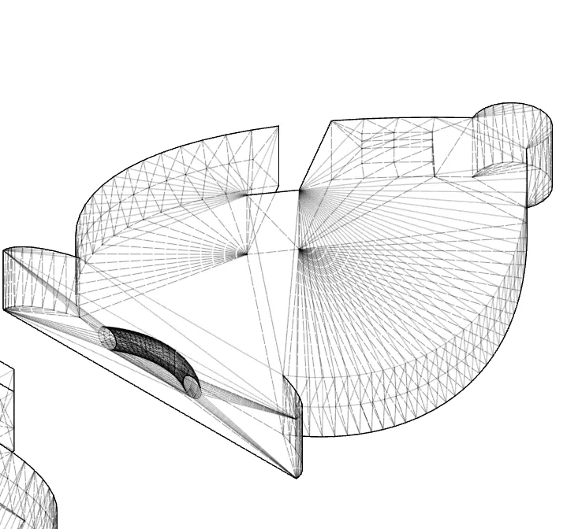
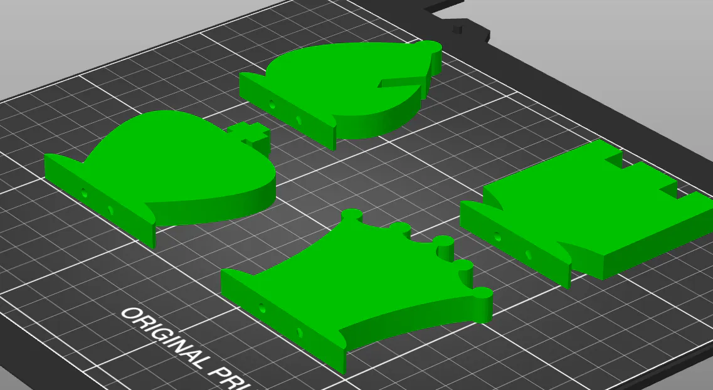
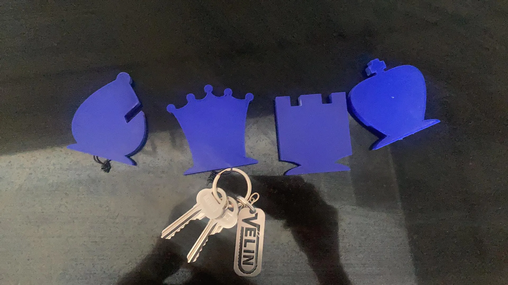

Lokaverkefni - Fræsing, Skrásetning og Verkefnastjórnun

Verkefnalýsing
Í Lokaverkefninu átti að hanna, teikna, undirbúa og fræsa eitthvað með Shop Bot. Skipuleggja og skrásetja feeds og speeds, toolpaths ofl fyrir það sem var hannað. Skrásetja svo framkvæmdina og afraksturinn á sameiginlegt vefsvæði.
Annar hluti var svo að búa til tillögu að lokaverkefni. Skrásetja svo á sameiginlegt vefsvæði; hönnunarþætti, framkvæmd, verkefnastjórnun og skipulag, samsetningu ofl. passa að hönnunarskjöl séu tiltæk með hlekk. Nota aðferðafræði verkefnastjórnunar til að skipuleggja vörður, skipta með okkur ábyrgð og ákveða tímaramma hvenær hvaða verkþáttur væri framkvæmdur.
Skipulag
Eftir að hafa lesið verkefnalýsinguna kom ekkert annað til greina en að setja upp hugbúnað fyrir verkefnastjórnun. Það hentaði sérstaklega vel að setja það þannig upp þar sem ég vann verkefnið frá Akureyri og auðvelt var að setja upp verkefni til að klára þar inni. Hver og einn gat svo assignað sig á verkefnin, skráð þá tíma sem tók að vinna þau og hvenær þau kláruðust. Aukaverkefnum var bætt inn í Jira þegar þau komu inn svo verkefnalistinn breyttist aðeins á tímabilinu en gekk þó vel upp. Hér á myndinni fyrir neðan er hægt að sjá dæmi hvernig TaskBoard-ið var sett upp en því var skipt í þrjá flokka, Ólokið - Í vinnslu - Lokið.
Einnig má sjá hér fyrir neðan hvernig tímalína og skipting verkefnisins fór fram, en skammstafir okkar eru á verkefnunum. Sveinn Margeir Hauksson (SMH), Sveinn Sigurðsson (SS) og Elías Lúðvíksson en þar er skammstöfunin EH. Sjá má að smá törn var tekin snemma í apríl áður en verkefnið var svo klárað jafnt og þétt frá 13. apríl.

Hugmynd
Hugmyndavinnan tók óþarflega langann tíma, aðalmarkmiðið var að hanna eitthvað sem hægt væri að nota í daglegu lífi en farið var í gegnum allskonar YouTube rásir til að leita af einhverjum sniðugum CNC hugmyndum. Að lokum var það þó Pinterest sem kom verkefninu til bjargar þar sem vinsælt var að gera lyklakyppuhengi líkt og það sem sjá má hér fyrir neðan.

Næsta mál á dagskrá var að tengja hugmyndina við eitthvað af áhugamálum okkar, en upp komu hugmyndirnar Sauna, PingPong, Skák og Golf. Saunan átti því miður ekki séns en valið stóð á endanum á milli PingPong og Skák, að lokum sigraði skákin í hönnunarumræðuni þar sem meira magn var af mögulegum fígúrum þar en í PingPong.
Hönnun
Við skiptum hlutverkunum á milli okkar þar sem við vorum að vinnna verkefnið í tveimur landshlutum. Einn af þeim hlutum sem ég átti að klára var að hanna hlutinn. Farið var yfir hugmyndavinnuna hér að ofan en næst á dagskrá var bara að hanna hugmyndina. Fyrst var hugmyndin teiknuð upp til að athuga hvernig hún myndi líta út en útkoman á því var einhvenveginn svona.
Næst tók við að Hanna hlutinn í Autodesk Fusion. Fyrst var teiknaður grunnur sem hafði pláss fyrir 4 mismunandi lyklakyppur og eina festingu.

Á grunninn voru svo teiknaðir skákkallar sem voru gerðir að New Body líkt og í VERKEFNI 2 en eftir að Biskup, Kóngur, Drottning og Hrókur höfðu verið búnir til leit hönnunin svona út.


Markmiðið var svo að hægt væri að fræsa út kallana líka eins og sjá má á myndinni hér fyrir neðan en þegar opnað var skrána fyrir sunnan kom hluturinn bara sem one body svo ekki var hægt að draga kubbana úr. Það var leyst með því að deila skránni með Share file link skipuninni í Fusion.
Þó svo að hægt væri að draga út kubbana á endanum mældi kennarinn með að 3D prenta kallana svo málið var leyst þannig.
Fræsing - Sveinn Sig
Panta þurfti tíma í fræsun en margir hópar voru að fræsa á svipuðum tíma svo að við ákváðum að hittast á laugardegi. Netleysi í fablabinu kom því miður í veg fyrir að hægt yrði að fræsa þann daginn. Gerð var önnur tilraun á mánudegi og þá náðist að fræsa.
Erfiðleikar
Eftir smávægilega örðuleika tókst loks að fræsa lyklasnagann. En vandræði komu upp vegna skráarinnar. Það var ekki hægt að aðskilja lyklakippurnar frá lyklasnaganum í Fusion. Til þess að geta fræst snagann þurftum við að opna hann, án skákmannana, í sér skrá. Eftir stutt símtal við Svein var vandamálið leyst. Teikningin var svo sköluð og filletuð til þess að bitinn næði að skera út öll smáatriði teikningarinnar. En bilið milli hringjanna, sem mynduðu kórónu drottningaarinnar, var minna en þykkt borsins.
Vegna tímaþrengsla var ákveðið að nota bita sem skar viðinn hratt og örugglega. Það var mikill kostur að geta lokið fræssingunni hratt af. Mikill hraði bitans olli því hins vegar að snaginn rispaðist örlítið. Einnig voru gerð smá mistök við efnissvalið, en timburplatan sem var fræst reyndist aðeins og lítil en það kom ekki að sök. Eftir fræsunina sagaði ég svo snagann út með bandsöginni í VR3. Eftir það pússaði ég yfir snagann.
3D prentun - Elías
Elías var ábyrgur fyrir taflmanna hausunum sem áttu að passa inn í borðið. Þegar Sveinn var búin að fræsa það út sendi hann Elías hver breiddinn á þeim ætti að vera til að þeir mundu passa í festinguna.
Skölun
Elías byrjaði á að reyndi fyrst að gera teikningarnar parametrískar. Það reyndist ómögulegt að fá hausanna til að færast til að halda staðsetningu svo hann eyddi öllum festingum og mælingum. Þá tók við svokallað "Work smarter not harder" mentality og Elías náði að taka íhlutina og skalaði þá til að passa við mælingar frá Sveini.
Gat fyrir lyklakippu
Þar sem taflmennirnir voru 3D-prentaðir gátum við búið til göng inni þeim. Á botnfleti hausana gerði Elías hring fyri gatið. Á topp flötin teiknaði hann svo annan hring með sama ummál og lyklakippa. Færði hringinn fyrir neðan botninn og notaði sweep path fyrir hringinn á botninum eftir ferli hringsins á framhliðinni. Þá vorum við komin með gat sem lyklakippa passar í á taflmönnunum.
Prentun
Þar sem hausarnir eru flatir og fremur stöðugir þurfti ekki mikið af supports. Þó er gatið holt og eru supports þar inni. Prusaslicer tekur við stl fileum frá fusion sem hann raðaði í ferhyrning. Því næst var að setja infyllið. Elías hélt sig við 15% þar sem hlutirnir eru nægilega þykkir til að brotna ekki og kostur að hafa þá léttari en þyngri þar sem þeir verða festir við lyklakippu. Prentið tók um einn og hálfan tíma.
Mín verkefni
Ég sá um hugmyndavinnu, hönnun, verkefnastjórnun, gerð kynningarinnar og heimasíðuna. Því miður er ég ekki með nægar upplýsingar til að skrifa um hluta Sveins og Elías svo þeir ætla að skrifa það á sínar heimasíður
Linkur á hönnunarskjöl
Lokaniðurstaða
Eftir samvinnu okkar hópfélaga varð til þessi flotti lyklakippusnagi sem má sjá á myndinni hér að neðan, eitt hornið á skemmdist aðeins þar sem reynt var að spara efni við framleiðslu snagans en það kemur ekki mikið að sök við notkun hans.


HLUTI III - Vinnutímar
| Nr. | Lýsing | Klukkutímar |
|---|---|---|
| 1 | Læra á tæki og forrit (Myndbönd) | 1 |
| 2 | Hugmyndavinna (Ákvörðun á verkefni og pælingar) | 2 |
| 3 | Hönnun á hlutnum | 2,5 |
| 4 | Verkefnastjórnun | 1,5 |
| 5 | Gerð kynningar | 1,5 |
| 6 | Heimasíða | 2,5 |
| 7 | Fræsun (Sveinn Sig) | 4 |
| 7 | Pússun (Sveinn Sig) | 4 |
| 8 | Undirbúningur fyrir 3D prentun (Elías) | 4 |
| 8 | 3D prentun og fínisering (Elías) | 4 |
| 27 klst | ||
Netfangið mitt
smh40@hi.isSímanúmer
+354 897-1637Heimilisfang
Holtagerði 8Húsavík, 640
Ísland